Who pays for courtesy at the crosswalk?
A self-driving car that gives way to people at a crosswalk saves them time, and the cars queued behind it pay for that time. We tested twelve driving planners, from simple rules to open-source driving systems, and kept the account for everyone at the crossing. Ranked on the test car alone, the planners that share one speed come out in a very different order.
The study in four points
Why we did this
A turning car and the people crossing in front of it often share one green light. Every second the car gives way saves people time and costs the cars behind it time. Tests of self-driving cars usually score only the car under test, so they cannot show who pays for its choices.
How we modelled it
A simulated left turn in CARLA with the car under test, two cars behind it, a delivery motorcycle, and walkers, a runner and e-bike riders who react to the signal and to the vehicles they can see. Every car is 4.67 m long, the median of the cars recorded at a real Tianjin junction. Twelve planners drove the test car, under four signal programs and four ways for the cars behind to follow, over 120 scenarios: 40 calibrated to recorded gaps, 40 written by an LLM agent and 40 rebuilt from recorded signal cycles. In 5,160 runs we counted everyone's waiting and every close pass.
What we found
- The LLM agent hits the brief. 74% of its scenarios produced the interaction we asked for, against 51% for the same model without the brief, 31% without the junction's timing and 13% for random draws.
- Whose cost you count picks the winner. Among the planners that share one speed, the order by the test car barely matches the order by everyone's cost.
- The crosswalk modules protect people most and make the queue pay; the fast CARLA agents cost everyone least only because they reach the crosswalk before the walkers.
- The cars behind make most close passes (63%), which a test of the lead car alone never sees.
- Human drivers give way by timing. At the recorded junction pedestrians went first as often as under the most courteous planners, and no driver stopped on the turn.
How to use it, and what comes next
Test a self-driving car together with the queue behind it and count everyone at the crossing. Planners should expect a person at the kerb to step out, give way by timing rather than stopping on the turn, and not rely on arriving first. Give pedestrian head starts where people are waiting. Next, we will add learned and language-model driving agents, a crosswalk without signals and more real junctions.
The story
Picture a left turn at a busy junction. The turning cars and the people on the crosswalk ahead often get their green at the same moment, so the driver has to find a gap between people. If the car goes early, people wait or step back. If it waits, the cars behind it wait too, and some may miss the green.
So who should give way, and who pays for it? A car that waits protects the people crossing but holds up every car behind it. A car that goes early saves the queue time and leaves people waiting at the kerb or stepping back. Tests of self-driving cars usually score only the car under test, which shows one side of this exchange. We built a test that keeps the account for everyone at the crossing.
Where agentic AI comes in, and why it matters
- The car under test is a driving agent. It perceives, decides and acts on its own goal among people who have goals of their own. Judged on its own progress and safety, the agent that hands most of its cost to others looks best. This test counts what each agent's choices cost the people crossing and the cars behind it.
- An LLM agent writes the test cases. Given a plain-language brief such as “a runner arrives as the green man flashes”, it drafts a scenario, calls a rule checker as a tool and revises whatever the checker rejects. It never drives and never sees a test result, so every scenario is stored, hashed and identical for every planner. We remove one part at a time (the brief, the junction knowledge, the language model itself) to measure what each part adds: with all of them, 74% of its scenarios produce the interaction asked for; without the brief 51%, without the junction knowledge 31%, and without the language model 13%.
- Everyone around the car reacts. Walkers, riders, the motorcycle and the cars behind respond to what the car under test does, so its effect on them can only be measured in closed loop.
- Next: the same interface (go, creep or wait, and a target speed, once a second) accepts an LLM or vision-language driving agent.
How we built the test
The test is a simulated junction in CARLA, an open-source driving simulator. Three cars wait at the stop line to turn left across a crosswalk, and a delivery motorcycle turns in the next lane. The first car is the car under test, driven by one of twelve planners. Eight of them look at the people they can see every second and decide whether to go, creep or wait, at up to 2.5 m/s: a reactive car goes unless someone is directly in its path, a gap-accepting car goes when it predicts nobody will reach its path within half a second of it, a courteous car wants a two-second margin, a model-predictive planner, a planner that creeps forward to negotiate, and ports of the decision logic and default settings of three open-source systems: PDM-Closed, a strong planner on the nuPlan benchmark, and the crosswalk rules of Apollo and Autoware. The other four are the driving agents that ship with CARLA, which steer and brake the car themselves at their own speed, 5 to 8 m/s over the crosswalk, and once more capped at the planners' 2.5 m/s. The two cars behind follow with one of four car-following models widely used in traffic simulation (IDM, Gipps, Krauss and adaptive cruise control).
The people crossing are walkers, a runner and e-bike riders. Each of them decides twenty times a second what to do, from the signal and from the vehicles they can see; a car body can block their view, and the rider's view of them. A walker steps off only when the gap to the next moving vehicle is large enough for them, and each walker's gap comes from people recorded at junctions in Germany (the inD dataset). People hurry when the green man flashes, and nobody starts on red. The signal gives cars and people the same green; or gives people a five-second head start, a leading pedestrian interval used in many cities; or gives that head start only when someone is already waiting; or keeps the turn red for cars not yet in the junction while a person is near their path.
Who arrives when, how fast and how patient they are is set by the scenario. Forty of our 120 scenarios use a calibrated population: a group that leaves when the green man appears, two stragglers, a late runner and an e-bike rider, each with a gap drawn from the German recordings. Forty were written by a language model from one-line briefs such as “a runner arrives after the green man starts flashing and meets the turning cars”, and forty were rebuilt from recorded signal cycles (below). A rule checker keeps every scenario inside the same limits and stores it, and every planner then runs on the same stored set. Every planner ran on all 120 scenarios with a shared green; four of them also ran under the other three signal programs, and two under two more car-following models. The CARLA agents ran again capped at 2.5 m/s, and the eight planners at one speed ran on three more scenario sets that each remove one part of the LLM agent: 5,160 runs in all.
Where the data come from, and why we also generate scenarios
Three recorded datasets feed the test. They are used as recorded, and no recording is redistributed.
- inD (four junctions in Aachen, Germany, filmed by drone): the gaps people accept before stepping in front of a moving vehicle. Each simulated walker's patience is drawn from them, and the simulated walkers reproduce the recorded 10th percentile and median accepted gap within 0.4 s.
- SinD (a signalised junction in Tianjin, China, with its traffic-light states): how real left-turning drivers and crossers share a green. We use it twice: as a reference for who goes first and how close they pass, and as a third set of test scenarios, each rebuilt from one recorded signal cycle with the arrival times, sides, kinds and speeds of the people who crossed the turning cars' path, and that cycle's green. It also sets the size of the simulated cars: 4.67 by 1.81 m, the median of the 4,752 cars recorded there.
- nuPlan (driving logs from four cities): how long human drivers stand when they do wait for a pedestrian, and how rarely a recorded unprotected turn meets one.
Recorded traffic cannot carry the whole test on its own, for two reasons. First, the people in a recording react to the driver who was there. Replayed in front of a different car, they would walk into its path or wait for a gap it never left, so a closed-loop test needs people who respond to the car being tested, with their patience and arrival times taken from recordings. Second, the hard cases are rare in logs. Of the 57 recorded Tianjin cycles in which at least two pedestrians crossed the turning cars' path, the 40 we rebuilt hold two to four walkers each, three e-bike riders in total, no runner and no motorcycle; only 3 of 39 recorded unprotected turns in nuPlan met a pedestrian at all. A language model can write the situations a planner has to handle, such as a group stepping off as the green man flashes, a runner arriving at the end of the green or a walker hidden from a motorcyclist, on request and for under a dollar per 40 scenarios. The recorded cycles then show whether a planner's ranking holds up in ordinary traffic.
What we count in every run
- People's waiting: the time each person is held or slowed by a vehicle, in person-seconds.
- Cars' waiting: the time each car stands still before it completes the turn, in vehicle-seconds.
- Close passes: a vehicle and a person cross the same spot less than 1.5 s apart, credited to the vehicle that made it and the signal phase it happened in.
What we found
The table ranks the twelve planners on a shared green with IDM followers. Lower is better in every column except the ranks, where 1 is best.
| Planner for the car under test | People's waiting (person·s) | Cars' waiting (vehicle·s) | Close passes per run | Still on the turn at end of green | Rank, own car | Rank, everyone | ||||
|---|---|---|---|---|---|---|---|---|---|---|
| calibrated | LLM | recorded | calibrated | LLM | recorded | |||||
| Reactive (rule) | 16.2 | 10.9 | 4.1 | 25.4 | 14.6 | 14.2 | 2.26 | 0% | 9 | 12 |
| Gap acceptance (rule) | 6.1 | 11.0 | 2.1 | 55.3 | 17.8 | 20.3 | 1.43 | 7% | 6.5 | 8 |
| Courteous (rule) | 5.8 | 9.0 | 1.9 | 60.6 | 26.9 | 20.8 | 1.36 | 12% | 12 | 9 |
| Model-predictive (MPC) | 5.2 | 10.7 | 1.9 | 56.7 | 24.3 | 20.8 | 1.33 | 9% | 6.5 | 7 |
| PDM-Closed (port) | 14.1 | 10.8 | 3.2 | 38.3 | 15.3 | 18.1 | 1.96 | 5% | 9 | 10 |
| Creep and negotiate | 11.2 | 12.3 | 3.2 | 44.3 | 17.1 | 17.2 | 1.58 | 6% | 9 | 11 |
| Apollo crosswalk rule (port) | 4.4 | 9.5 | 1.8 | 82.1 | 30.7 | 28.9 | 1.22 | 34% | 11 | 5.5 |
| Autoware crosswalk module (port) | 4.6 | 10.3 | 2.0 | 57.1 | 22.8 | 21.6 | 1.32 | 9% | 5 | 5.5 |
| CARLA Basic agent | 6.2 | 5.3 | 1.4 | 14.3 | 10.8 | 7.4 | 1.18 | 0% | 3.5 | 3 |
| CARLA Behavior agent, cautious | 5.8 | 5.6 | 3.1 | 14.4 | 11.1 | 8.2 | 1.19 | 0% | 3.5 | 4 |
| CARLA Behavior agent, normal | 6.2 | 5.2 | 1.4 | 14.3 | 10.7 | 7.3 | 1.17 | 0% | 2 | 1.5 |
| CARLA Behavior agent, aggressive | 6.4 | 5.2 | 1.4 | 14.0 | 10.8 | 7.3 | 1.16 | 0% | 1 | 1.5 |
| CARLA agents capped at 2.5 m/s (all four alike) | 7.1 | 6.1 | 3.9 | 14.4 | 11.2 | 9.3 | 1.62 | 0% | – | – |
Means over the 40 scenarios of each set. Close passes count every vehicle, all 120 scenarios. “Rank by own car” uses how soon the test car clears the crosswalk and its own close passes; “rank by everyone” uses both sides' waiting, all close passes and near-misses. The first eight planners share a 2.5 m/s limit; the CARLA agents drive at their own speed, and the last row runs them at the same 2.5 m/s limit. The three ports reproduce each system's published decision logic and default settings at this junction, not the full software.
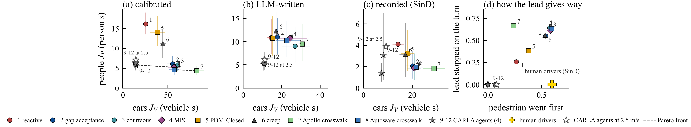
1 · What the LLM agent adds
We took the scenario writer apart one piece at a time and ran the eight planners that share one speed on each version (960 runs). A brief is checkable when its interaction can be read off a run, for example “the lead car meets a runner who arrives as the green man flashes”; 35 of the 40 LLM-written scenarios have one.
| Scenario set (40 each) | Asked-for interaction happened | Scenarios that separate planners | Planners with a close call by the test car, per scenario | Runs with a contact (of 320) |
|---|---|---|---|---|
| LLM agent: brief, junction timing, rule checker | 74% | 36 | 2.1 | 15 |
| … without the brief (neutral request) | 51% by chance | 37 | 2.6 | 12 |
| … without the junction's timing | 31% | 27 | 1.1 | 10 |
| … without the language model (random draws, same ranges) | 13% by chance | 30 | 1.3 | 0 |
| Recorded Tianjin cycles | 2% by chance | 27 | 0.9 | 8 |
With its brief and the junction's timing, the agent produced the interaction we asked for in three of four scenarios. Each piece matters: without the brief the same model produced a given interaction only by chance, without the timing it mostly missed, and random draws almost never did. The brief decides which situation is tested rather than making tests harder: the version without a brief led to as many close calls. Both LLM sets separated the planners in more scenarios than random draws or recorded cycles. Forty scenarios cost US$0.63.
2 · Whose cost you count picks the winner
The CARLA agents come first whether the test car alone or everyone is counted, so over all twelve the two orders agree (Kendall's τ 0.69). Among the eight planners that share one speed they barely agree (τ 0.27): the reactive rule is fifth by its own car and last by everyone's account. With the CARLA agents at the same speed, the orders disagree again (τ 0.19). Much of what a test of the lead car misses lands on the cars behind it: they made 63% of the close passes, the lead car 18% and the motorcycle 19%. Contacts happened in 38 of 1,440 runs, all below 1.3 m/s and 33 of them by a car behind the test car, usually reaching a person who had stopped beside its path.
3 · The crosswalk modules protect people, and the queue pays
Among the eight planners at one speed, the Apollo and Autoware crosswalk logic, MPC and the courteous rule keep people's waiting lowest, at 3.3 to 5.7 seconds of car time for each second of people's time saved. Apollo protects most and costs most: on the calibrated scenarios the three cars stand 82 seconds per run, and in 34% of runs the test car is still short of clearing the crosswalk when its green ends. Autoware and MPC protect nearly as well for 25 seconds less. The reactive rule, PDM-Closed and creeping protect people least. PDM-Closed expects everything to keep its current speed, so a person standing at the kerb is expected to stay there; its test car made 0.64 close passes per run, against 0.14 to 0.26 for the planners that allow a waiting person to step out.
4 · The fast CARLA agents arrive first instead of giving way
At their own speed the CARLA agents cross at 5 to 8 m/s and clear the crosswalk 5 to 6 seconds into the green, before most walkers reach the cars' lane, so they cost everyone least. Capped at the planners' 2.5 m/s, their four styles behave identically: their test car's close passes rose from 0.02–0.04 to 0.46 per run, they needed the emergency brake in 12% of runs, pedestrians went first in only 8% of their encounters, and they never stopped on the turn. Their logic does not give way to people; arriving first, or the emergency brake we added, does. With a five-second head start for people, the normal agent needed the emergency brake in 12% of runs at its own speed and in 38% at 2.5 m/s.
5 · Generated scenarios separate planners more often than recorded ones
The planners' cost to people differed by more than one person-second in 36 of 40 LLM-written scenarios, 40 of 40 calibrated ones and 27 of 40 recorded ones (Fisher p = 0.027 for LLM-written against recorded). In recorded traffic every planner cost people between 1.4 and 4.1 person-seconds: ordinary cycles rarely hold the situations that make a planner choose.
6 · A head start for people helps only with the right planner
A five-second head start cut people's waiting by 4.7 person-seconds behind the reactive rule, changed nothing measurable behind the planners that already give way, and added 4.1 person-seconds behind the fast CARLA agent. Giving the head start only when someone is waiting saved the cars 4.0 seconds per run against a fixed head start, with no measurable cost to people; holding the turn red while a person is near the cars' path cost 2.4 seconds and did not reduce the close passes of the cars behind.
7 · Human drivers give way by timing, not by stopping
We scored the 449 left-turning drivers recorded at the Tianjin junction the same way. None of them stopped on the turn, yet pedestrians went first in 60% of their encounters and only 2.2% were close: the drivers timed their approach. The eight planners at one speed stopped on the turn in 26 to 67% of runs, and only the courteous rule, MPC and Autoware came near the drivers' pedestrian-first share; the CARLA agents almost never let a pedestrian go first. The drivers do push for the green, and e-bike and bicycle riders took the close passes (19% of their encounters).
8 · The size of the car matters
Our earlier runs used CARLA's Nissan Micra, 3.63 m long; real cars at the junction are a metre longer. With the recorded size, every planner at one speed held people 2.5 to 3.5 person-seconds longer per run, and the order by everyone's cost changed (τ 0.51 between the two). All results on this page use the recorded size, except the first stage below.
What the results suggest for planners
- Expect the person at the kerb to step out. Planners that treat a standing person as able to start at any moment made less than half the close passes of one that does not.
- Give way by timing, not by stopping on the turn, as the human drivers did.
- Bound the wait. A car that is still on the turn when its green ends holds up everyone behind it.
- Yield to the person, not to the clock. A planner that is safe only because it arrives first fails when the signal timing changes.
- Treat riders and runners as their own class; they get the close passes in simulation and in recorded traffic.
- Match the signal to the planner, and give the head start when someone is waiting.
- Test with generated scenarios as well as recorded ones, and score everyone at the crossing.
The first stage: three rule-based styles in 960 runs
Before the twelve-planner test, the three rule-based styles ran on the calibrated and LLM-written scenarios under two car-following models and two signal programs, with CARLA's smaller 3.63 m car. These results explain where the costs above come from.
9 · Courtesy moves the wait onto the queue
A courteous lead car gives way more often. People wait about 3.5 person-seconds less per run, and the three cars stand about 18 vehicle-seconds longer: roughly five seconds of car time for each second of people's time. The trade appears in most scenarios and in both scenario sources.
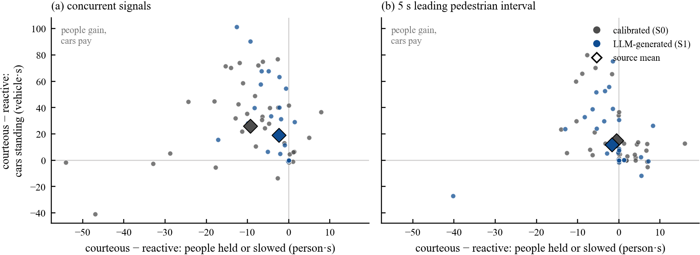
10 · A head start for people works when people are already waiting
With a 5-second leading pedestrian interval, people step off before the cars get their green. In the calibrated scenarios, where three walkers are typically at the kerb when it begins, it shortens the wait for both sides and does much of courtesy's job: courtesy saves people 5.8 person-seconds with a shared green and 1.1 with the head start. In the LLM-written scenarios people mostly arrive later, so the head start costs the cars time and saves people little.
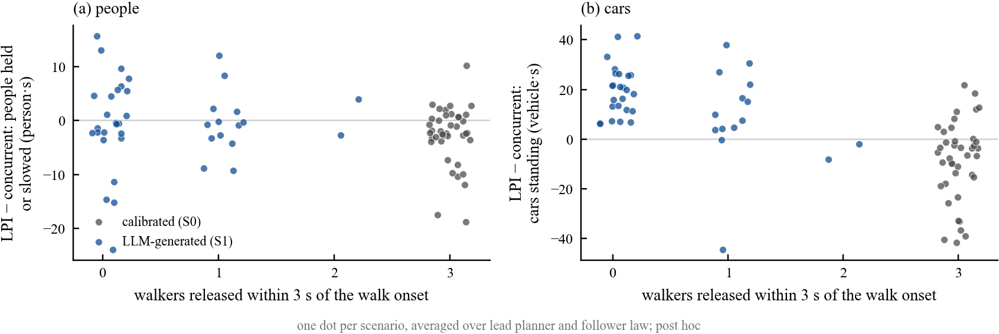
11 · Most close passes come from the cars behind
The lead car, the one usually under test, makes a quarter of the close passes. The two cars behind it make almost half, and 80% of theirs happen late, while the signal shows flashing or red to people. The delivery motorcycle makes the rest. Per vehicle, a follower makes fewer close passes than an equally reactive lead car (0.50 against 0.84 per run); the followers' larger share comes from their number and their late timing.
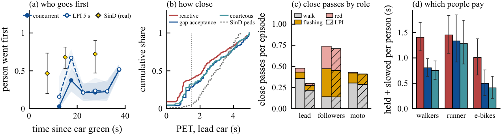
12 · A lesson about generated scenarios
The LLM-written scenarios mostly realised their briefs, yet in 9 of 40 the lead car met nobody and the cars behind it met the people instead. We tested two fixes in 480 more runs: giving the model corrected timing, and letting it start a person when a chosen car comes near the crosswalk. Neither helped: the lead car still met nobody in 8 of 40 scenarios with either fix. Most of the misses came from two briefs that point at other vehicles: a group arriving near the end of the green, after the lead car has gone, and a walker hidden from the motorcycle. The model writes what it is asked for, so the brief should say which vehicle the scenario is meant to test (details).
Replays
Same LLM-written scenario, six driving agents
The late-runner scenario (brief B3) under six lead cars, replayed in CARLA from the run logs at real speed for the first 24 seconds: the reactive rule, the PDM-Closed port, the Autoware and Apollo crosswalk ports, the CARLA Behavior agent at its own speed and the same agent capped at 2.5 m/s.
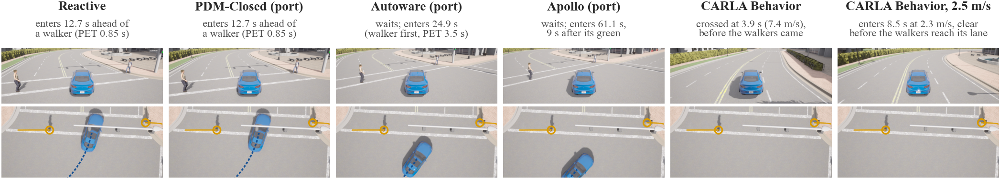
Same scenario, three lead cars
From the first stage, with CARLA's smaller car: each video plays the same scenario three times side by side (reactive, gap-accepting and courteous lead car), drawn from the run logs.
Twice real speed, first 60 s. A red ring marks a person held by a vehicle, amber a person slowed, and a dotted ring a person waiting for their signal. The totals under each panel are that run's measures. The calibrated scenario (S0_207) is the one whose courtesy effect is closest to the calibrated median.
With a head start for people
What comes next
How the results can be used
- Testing automated cars. Score the car together with the traffic behind it and the people around it, in the same run, and report both sides' waiting and close passes by vehicle and signal phase.
- Comparing planners. The twelve-planner table above can take any planner that reads the same observation; report both rankings and the failure counts, not only the test car's.
- Signal timing. A pedestrian head start pays off where people are waiting and behind a car that does not give way by itself; giving it on demand returned 4 seconds of the queue's time per cycle.
- Scenario generation. Tell the generator which vehicle a scenario should test, and check in a closed-loop run which vehicle it actually reached.
Next stage
- Learned and language-model driving agents. The same interface (go, creep or wait, and a target speed, once a second) takes them; we will also run every planner at speeds taken from recorded data.
- More places and road users. An unsignalised zebra (with the uniD dataset as reference), other turns, and followers that plan for themselves.
- More real traffic. The comparison with human drivers covers one junction where pedestrians share the turning green. More junctions, and studies with people, are needed before saying how people would experience these outcomes.
Detailed results
For reviewers: the registered analysis, the figures behind the summary, the 5,160 twelve-planner runs, the first stage's 80 scenarios and 960 runs, and the frozen protocol documents. Open any block.
Short names: P1, P2, P3 = reactive, gap-accepting and courteous lead car. LPI = 5 s leading pedestrian interval (head start); concurrent = shared green. S0 = calibrated scenarios, S1 = LLM-written. JP = people's waiting (person·s), JV = cars' waiting (vehicle·s). Q01 = primary grid (queue at the stop line); R01 = earlier grid (queue 8 m upstream).
How the benchmark worksPipeline figure, factors and measures
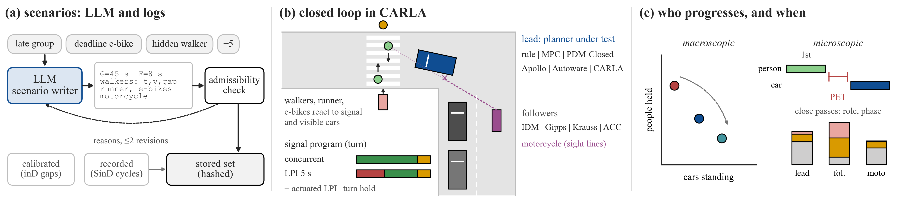

Design: 3 lead planners × 2 follower laws × 2 signal programs × 80 scenarios = 960 episodes, paired within scenario. Calibrated crossers are sampled from inD-fitted gap acceptance; LLM scenarios come from 8 briefs, five each. Close passes split into exposure and per-passage risk, by vehicle role r and signal phase φ:
Lowering ρ makes each passage safer; lowering N means fewer passages. Courtesy's effect on followers is therefore reported together with the 10% of followers that no longer complete the turn.
Twelve-planner test: hypotheses H13–H23 and failuresRegistered before the 5,160 runs, with verdicts; failure counts and signal effects by planner
| Id | Hypothesis | Verdict | Result |
|---|---|---|---|
| H13 | The order by the test car alone and the order by everyone disagree, over all twelve (Kendall τ below 0.5, interval excluding 1) | not supported | τ 0.69 [0.48, 0.74] |
| H14 | LLM-written scenarios separate the planners more often than recorded ones | supported | 36/40 vs 27/40, Fisher p 0.027 |
| H15 | A head start given on demand costs the cars less than a fixed one, without losing people's saving in calibrated scenarios | supported | −3.96 vehicle·s [−5.35, −2.71] |
| H16 | Holding the turn while a person is near lowers the close passes of the cars behind | not supported | −0.03 [−0.09, 0.02] per run |
| H17 | At 2.5 m/s the CARLA agents let pedestrians go first more often | supported | 1.7% → 8.0%, +0.063 [0.002, 0.123] |
| H18 | At 2.5 m/s the CARLA agent needs the emergency brake less often under the head start | not supported (more often) | 11.7% → 38.3%, +0.27 [0.17, 0.37] |
| H19 | With every planner at one speed, the two orders still disagree | supported | τ 0.19 [0.08, 0.74] |
| H20 | The brief carries the intent: briefed hit rate above the unbriefed chance rate | supported | 0.74 vs 0.51, +0.23 [0.08, 0.38] |
| H21 | The language model beats random draws in the same ranges | supported | 0.74 vs 0.13, +0.61 [0.47, 0.75] |
| H22 | The junction's timing helps the model hit the brief | supported | 0.74 vs 0.31, +0.43 [0.23, 0.60] |
| H23 | Briefed scenarios expose more close calls by the test car than unbriefed or random ones | not supported | 2.08 vs 2.60 and 1.33 planners per scenario |
In the calibrated scenarios someone was always waiting, so the on-demand and fixed head starts were the same signal there; the saving comes from the LLM-written (call placed in 38% of cycles) and recorded scenarios (73%).
| Planner | Runs | Contacts | Near-misses (PET < 0.5 s) | Lead blocks the crosswalk | Lead not clear by end of green | Emergency brake | Standstills |
|---|---|---|---|---|---|---|---|
| Reactive | 960 | 45 | 79 | 43 | 6 | 0 | 0 |
| Gap acceptance | 240 | 8 | 3 | 1 | 16 | 0 | 0 |
| Courteous | 960 | 24 | 38 | 11 | 126 | 0 | 0 |
| MPC | 120 | 4 | 2 | 1 | 11 | 0 | 0 |
| PDM-Closed (port) | 240 | 8 | 13 | 11 | 9 | 0 | 1 |
| Creep and negotiate | 240 | 9 | 26 | 3 | 16 | 0 | 0 |
| Apollo crosswalk (port) | 240 | 6 | 0 | 0 | 66 | 0 | 0 |
| Autoware crosswalk (port) | 600 | 15 | 3 | 4 | 67 | 0 | 0 |
| CARLA Basic | 120 | 0 | 1 | 0 | 0 | 2 | 0 |
| CARLA Behavior, cautious | 120 | 1 | 1 | 1 | 0 | 1 | 0 |
| CARLA Behavior, normal | 600 | 10 | 14 | 10 | 0 | 28 | 3 |
| CARLA Behavior, aggressive | 120 | 0 | 0 | 0 | 0 | 0 | 0 |
| CARLA Basic / cautious / aggressive at 2.5 m/s | 120 each | 0 | 13 | 11 | 0 | 14 | 0 |
| CARLA Behavior, normal, at 2.5 m/s | 240 | 3 | 43 | 36 | 0 | 60 | 0 |
Counts over every run of each planner (all signal programs, car-following models and scenario sets it ran under). All contacts happened below 1.3 m/s, most of them by a car behind the test car reaching a person who had stopped beside its path; with CARLA's smaller car the leaderboard grid had 6 in 1,200 runs, with the recorded size 38 in 1,440. The emergency brake exists only for the CARLA agents.
| Planner | People, head start | People, on demand | People, turn hold | Cars, head start | Cars, on demand | Cars, turn hold |
|---|---|---|---|---|---|---|
| Reactive | −4.7* | −3.6* | −0.8 | +7.4* | +4.4* | +5.5* |
| Courteous | −1.0 | +0.3 | −0.2 | +0.2 | −5.8* | +0.1 |
| Autoware (port) | −1.0 | +0.3 | −0.6 | −0.3 | −5.2* | +0.1 |
| CARLA Behavior, normal | +4.1* | +1.3* | −0.4 | +5.3* | +3.4* | +3.8* |
Change in people's waiting (person·s) and cars' waiting (vehicle·s) against a shared green, paired within scenario over all 120. * the 95% interval excludes zero. The per-planner breakdown is exploratory, as is the comparison with human drivers.
Registered hypotheses H5–H8Every pre-registered contrast in both grids, with verdicts
The primary grid (Q01) starts the queue at the stop line. In the earlier registered grid (R01) the queue started 8 m upstream and the lead car arrived after the 5 s head start had ended, so its LPI contrasts are exactly zero. Contrasts are means of within-scenario differences with paired bootstrap 95% intervals.
| Id | Contrast | Pred. | Q01 pooled | Calibrated | LLM | R01 pooled | Verdict (Q01) |
|---|---|---|---|---|---|---|---|
| Loading… | |||||||
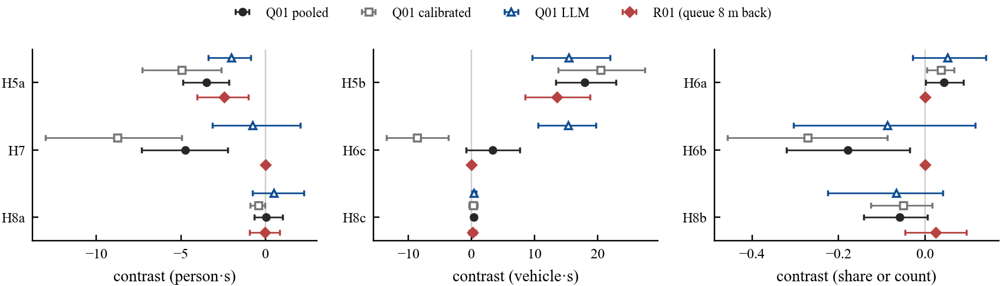

Condition explorerCell means for any measure, source, follower law and grid
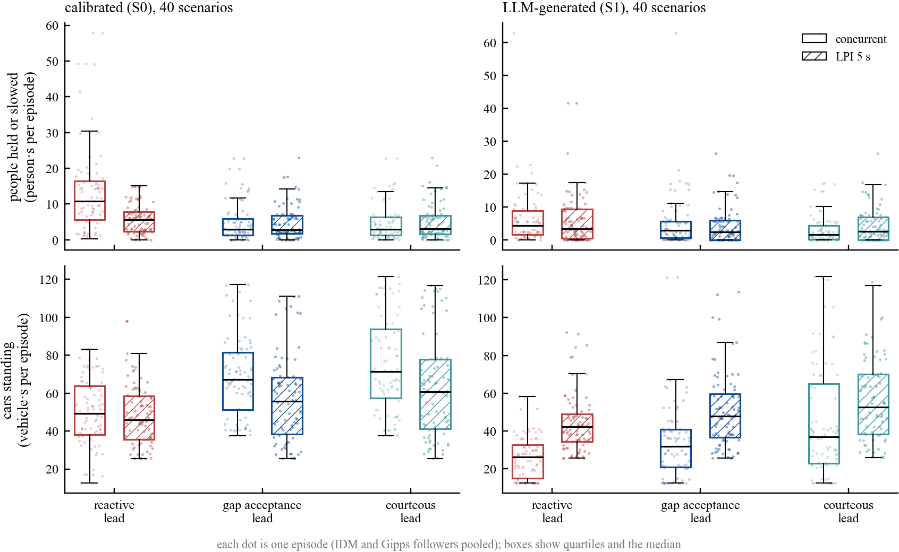
Close passes by vehicle, phase and sight linePer-vehicle rates and their 95% intervals
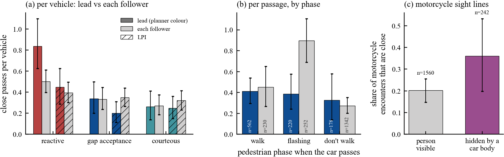
| Role | Planner | Signal | Close passes per vehicle [95% CI] | Completed the turn |
|---|
The 80 scenariosBriefs, crossers and per-planner outcomes
| Brief | Name | Text given to the generator |
|---|
Generator study and the follow-upRegistered hypotheses H1–H3 and H9–H12, with results
The generator study (476 episodes) compared LLM, calibrated and uniformly sampled scenarios.
| Id | Hypothesis | Verdict | Detail |
|---|
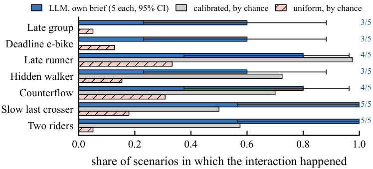
Follow-up (amendment T). Two causes were possible: the prompt's timing was stale (it put the lead car at the zebra 23–26 s after the start; it arrives at 14.3 s), and clock-timed releases cannot follow a planner that yields. Arms: C0 existing clock-timed scenarios; C1 clock-timed with the timing sentence corrected; T1 state triggers allowed. Same model, briefs and checker, IDM followers. Registered: H9 T1 has fewer scenarios where the lead car meets nobody (one-sided Fisher); H10 more scenarios that separate the planners (Fisher); H11 a higher lead share of close passes (bootstrap); H12 C1 against C0 (two-sided estimates). Designed after the primary results and registered before its 480 runs; C0 reuses the primary grid's runs.
Status
Loading…
Exploratory checks, written after the results. The model used a trigger in 21 of 40 T1 scenarios and for 73 of 216 crossers; 39 triggers named the lead car, 23 the second car and 11 the third. The share of crossers who stepped onto the crosswalk before the lead car had cleared it was 0.41 (C0), 0.53 (C1) and 0.54 (T1), against 0.80 in the calibrated scenarios. Misses by brief (of 5 scenarios each, C0 / C1 / T1): late group 4 / 4 / 3, hidden walker 0 / 2 / 4, open brief 4 / 1 / 0, counterflow 1 / 0 / 1, two riders 0 / 1 / 0, others 0. The regenerated scenarios also produced 8 standstills (C1 under the head start; one with the lead car, seven with a follower) and 4 runs in which a follower crept into a standing person at under 0.9 m/s; the earlier grid had neither.
Real-traffic reference and datasetsSinD comparison; what each dataset contributes
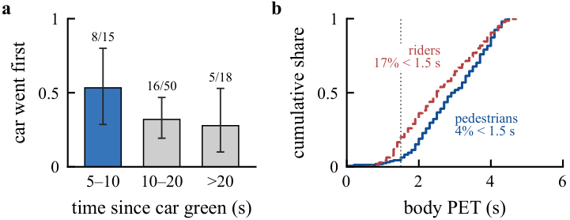
| Dataset | Role here | What we use from its logs |
|---|---|---|
| inD | Calibrates crossers' gap acceptance | 1,834 pedestrian–vehicle crossing encounters: accepted gaps, post-encroachment times, vehicle speed (median 19 km/h) |
| uniD | Speed and stop priors; reference for an unsignalised zebra | 7,852 pedestrians, 711 bicycles, 1,248 cars on a campus road with zebras |
| SinD | Outside reference (signalised) | Tracks with signal states: who goes first, post-encroachment time, standing time, time since green |
| highD, rounD | Priors | Headways; urban speeds and stops |
Data downloads and episode browserThe 5,160 twelve-planner runs, eight first-stage CSV files and the first-stage episode browser
All 5,160 twelve-planner runs (recorded car size), every measure and failure flag.
The registered analysis of those runs: leaderboards, H13–H23, ablation, signals, human comparison.
960 primary episodes, every measure.
960 upstream-queue episodes.
Every vehicle–person encounter: role, who went first, post-encroachment time, phase.
Every crosser: held, slowed, signal wait, crossing time.
Every vehicle: standing time and turn completion.
Per vehicle: passed, passage phase, close pass (post hoc).
Motorcycle encounters with sight-line state (post hoc).
Walkers at the kerb at the walk onset, by scenario (post hoc).
Protocol, registration and deviationsFrozen documents with hashes, gates, deviation log, statistics
Each grid was registered and frozen (file hashes) before its runs, and every factor gate compares a run with its twin.
| Document | SHA-256 of the original |
|---|
| Freeze | Files hashed | Episodes | Frozen at (UTC) | SHA-256 |
|---|
| Gate set | Results |
|---|
| Deviation | Handling |
|---|---|
| In R01 the queue started 8.2 m upstream; the 5 s head start had ended before the lead car arrived, so all 480 LPI runs equal their concurrent twins. | Amendment Q (queue at the stop line) was registered after that result and before its runs; R01 is reported as a sensitivity grid. |
| The stopped-car pass rule took four gate iterations before the benchmark freeze. | All iterations are in the benchmark registration. |
| Amendment T gate T-b's “follows the planner” criterion was mis-specified: a lead-car trigger at 10 m fires before the planners diverge. | The failure is recorded; the criterion moved to the third car's trigger and passed, before the grid, with no code change. |
| H6c (head-start cost to cars) is null pooled, with opposite signs in the two sources. | Reported as not supported, with both source estimates. |
| Generator study: H1 and H2 unsupported; 11 runs deadlocked under the inherited stop and crosser rules; the collision sensor missed body touches. | Reported; the benchmark adds the stopped-car pass rule and measures contact from body polygons. |
| Per-vehicle, per-phase, motorcycle sight-line and kerb-onset analyses were added after the reviews. | Labelled post hoc throughout. |
Statistics: paired bootstrap over scenarios, 4,000 resamples with a fixed seed for the registered contrasts, 2,000 (seed 9) for the micro breakdowns and 4,000 (seed 21) for H11. Registered contrasts are uncorrected for multiplicity; exploratory and post hoc results carry no confirmatory weight. Close passes use a post-encroachment time below 1.5 s.